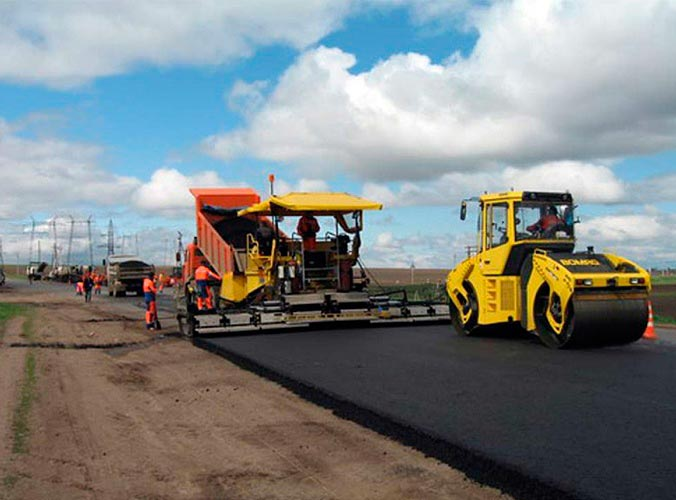
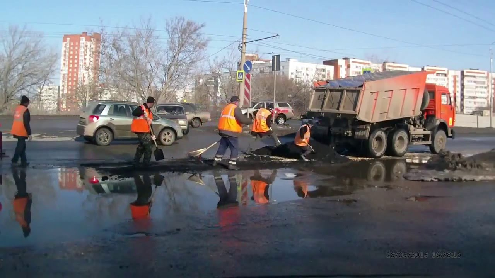

Сколько было скандалов, разговоров, трагедий - ничто не повлияло на изменение этой проблемы, проблемы плохих дорог. Наша команда «Betteroads» хотела бы рассказать вам о данной проблеме более подробно и побудить вас ко взятию инициативы её решения в свои руки.
Каждому россиянину известно, что в его стране существует проблема. Некачественные, быстро разрушающиеся и самое главное - небезопасные дороги. Но мало кто знает что входит в комплекс её составляющих, в чем причина всех несчастий. Мы бы хотели рассказать вам о каждой из них. Несомненно первая из них - это некачественные материалы, неустойчивые ко внешним воздействиям. А некачественные материалы приобретают из соображений видимой «экономии без потери качества». Государство экономит на том - на чём нельзя экономить. В вопросе выбора материалов нужно отталкиваться от: -Климата, то есть они должны быть устойчивыми к коррозии, то есть не должна рушиться после ливня или таяния снега; -Вида транспорта, который передвигается по этой дороге; -Среднее количество проезжающего транспорта по этой дороге соответственно. Вторая причина - рабочая сила. Как и у многих людей, результат деятельности рабочих зависит от их заработной платы. Соответственно уровень профессионализма зависит от выделенного бюджета.
Из приведенных выше постулатов качественной полосы движения вывод приводится сам собой - в России на эти обязательные параметры никто не обращает внимания, ведь если бы они выполнялись, этой проблемы не возникло бы. Как например в одной стране западной Европы. Количество проезжающего транспорта довольно велико, но несмотря на это, этой проблемы просто напросто нет. Конечно, с климатом в этой стране сложностей тоже не возникает, ведь эта страна - Испания. Если хотите сравнить цену с другими странами, перейдите в калькулятор.